We don't need to write any code for the Ok and Cancel buttons, as they were automatically hooked up by quickly when it created the dialog.
Before we go on to invoking the dialog, delete HBox from SuperTextWindow that holds the text entry and label, as we won't be needing those.
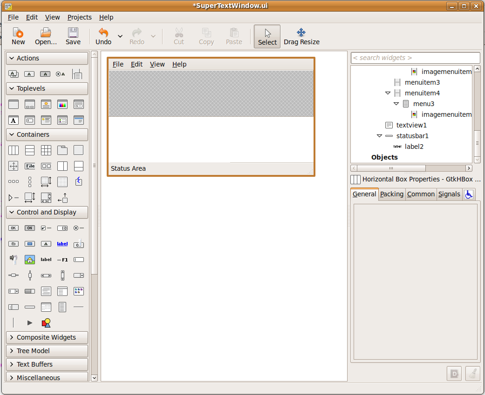Calling the Save Dialog
To use the dialog in SuperTextWindow, we need to follow these steps:
- Import SaveDialog in SuperTextWindow
- In the save_file function, create an instance of SaveDialog
- Run the Dialog
- Get the String
- Destroy the dialog
- Check the response before proceeding
Importing the SaveDialog
Simply add the SaveDialog to your import statements at the top of the file:Create an instance of the dialog and run it
When the user chooses Save, we want to open the SaveDialog and collect the title of the note from the user. So we need to modify our save_file function.
To create an instance of the dialog, use the NewSaveDialog() function in the SaveDialog module. It's important that you don't create an instance of SaveDialog directly, as it won't have a chance to load up it's UI that way, and it won't work. So whenever you use a quickly dialog, do it like this:
To make the dialog appear, simply use the run() method. However, we want to check the result, so we'll need to store that in a variable. After it runs, we want to collect the string from the user, like this:
Clean up the dialog
We need to tell the dialog to not show itself anymore. We could call saver.hide() to make it hide, but since we don't need it hanging around, we'll just destroy it. Before we go on, though, we need to ensure that the user actually wants to save, so if we didn't get the Ok result, we should just return out of the function:
Since we're now getting the title from the dialog instead of the text entry, we should delete the line of the code that sents it from entry1. So except for the addition of the dialog code, the save_file function looks pretty much the same as it did in part 1:
Now when we choose save, we get the SaveDialog instead: 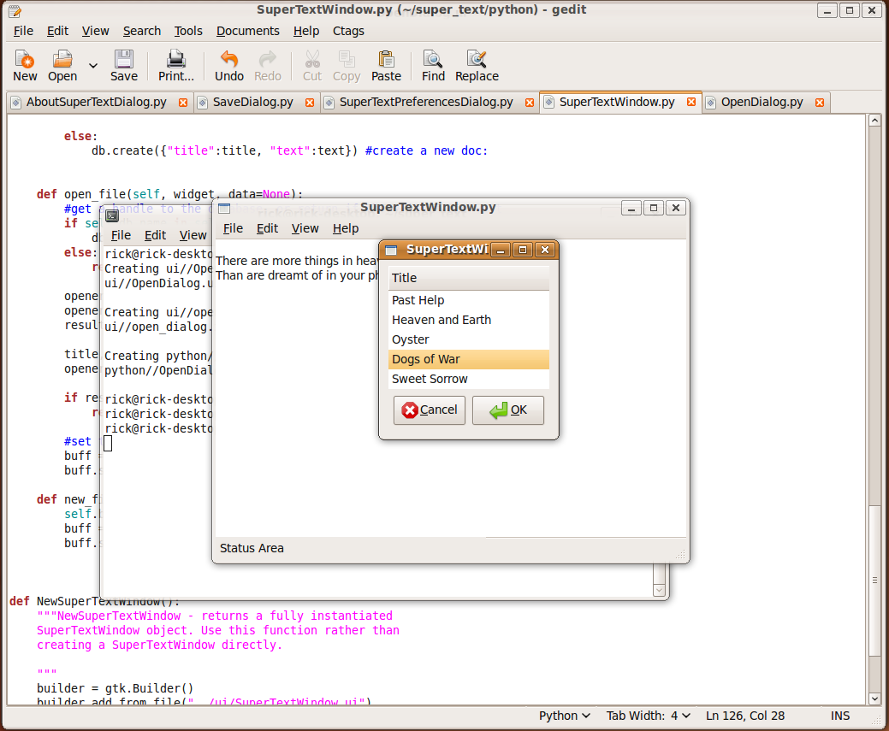Creating a Dialog with a TreeView
We'll use a similar approach in the Open dialog that we did with Save. However, there is one big difference, we want to provide the user with a list of documents that you could choose to open. This will introduce one of the most powerful widgets in the pygtk library, the TreeView. We will be using the TreeView to display the titles of the documents stored in couchdb, but also to store the id's for those documents, so that they can be opened and inserted into the UI.Create the Open Dialog
Editing the New Dialog
Start out by closing, and then reopening glade again:
Start by adding an HBox and label in the sammer manner as in the Save Dialog above.Create the TreeView
When the dialog loads, we will read all of the documents from couch db, and display the titles in the open dialog using a TreeView. However, to use a TreeView involves coordinating the following components:
- A gtk.TreeView that is the top level container
- A model to hold the data for the TreeView, in this case a gtk.ListStore
- A set of columns to display in the TreeView, in this case, only one column is needed
- A CellRendered to tell the column what to display from the store
These are a lot of pieces to get working together, but the TreeView is a very powerful UI element, and we'll only be touching the surface in this Tutorial. Fortunately, we can use Glade to set most of this up.
Creating the TreeView and ListStore
Start by clicking on the TreeView widget in the Control and Display section, and then clicking in the empty space of the HBox. You will be prompting with the "Create a Treeview" dialog to add a Model:
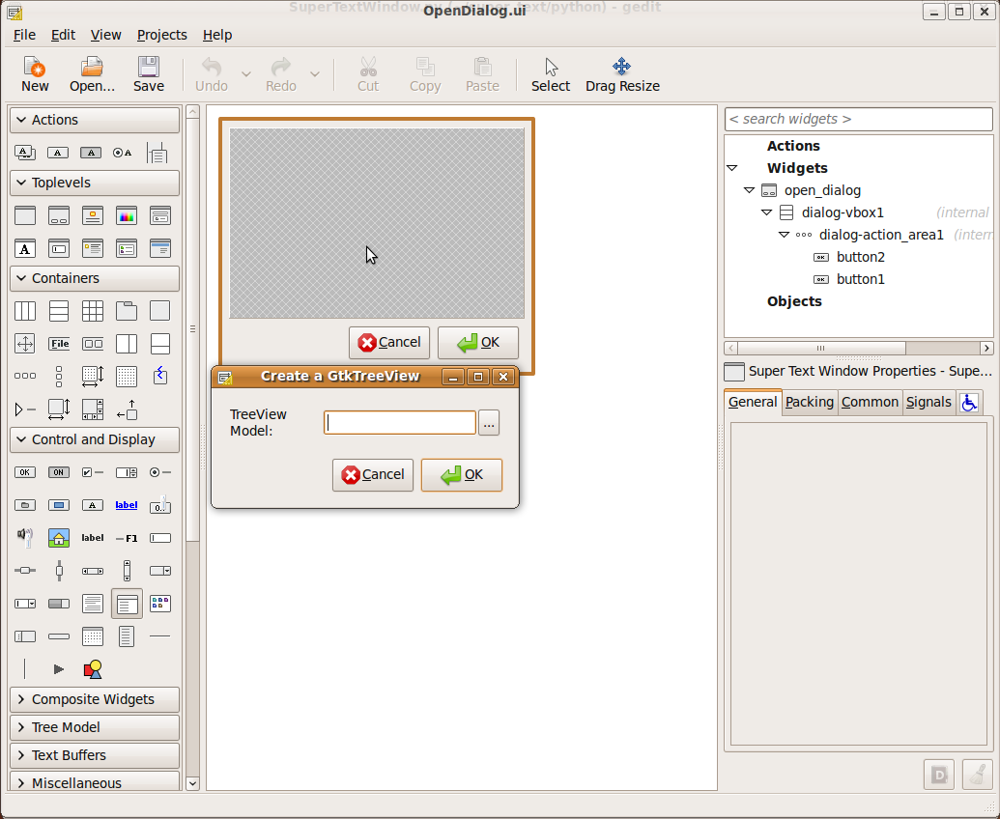Click the builder button ([...]), to bring up the Model chooser. The list is empty, since there are no TreeView models in the project yet.
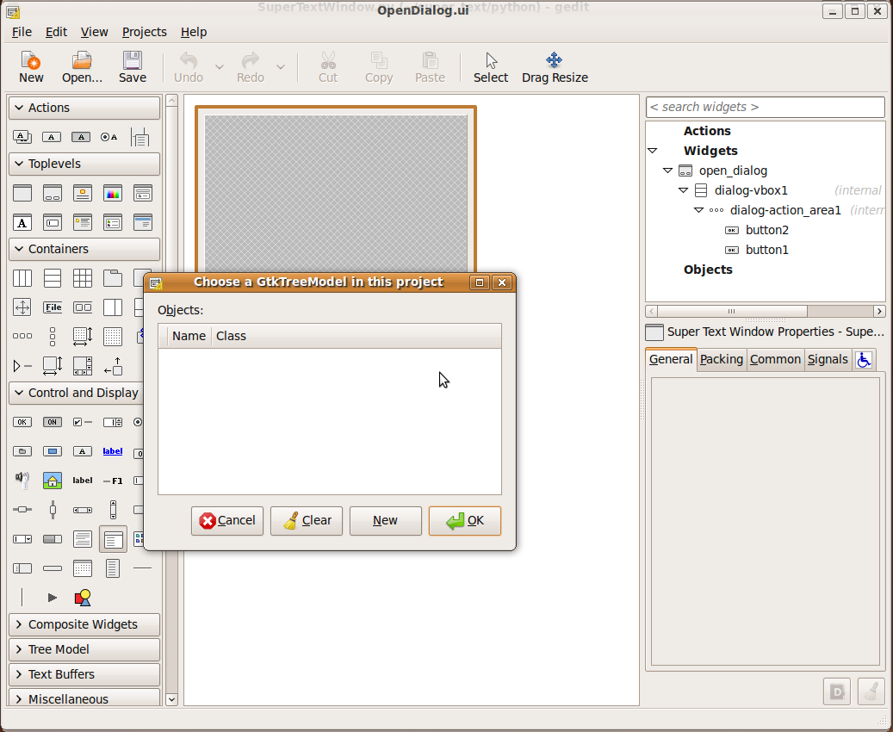
Click the "New" button and a ListStore will be added to the project and will populated in the Create a Treeview dialog. Hit Ok.
Set up the ListStore
liststore1 is a model that was added to the Objects section of the inspector. You may need to scroll the inspector window to see it. A liststore is the simplest model for a treeview, as it is a grid of data that is designed so that a TreeView can present that data in a grid as well. However, you get to choose what data in liststore1 you want to display in the grid, you don't have to display it all. We'll take advantage of that by creating two columns of data in the list store. The first column will be for the titles, which we will display, and the second will be for the actual text, which we won't display, but that we will return to the SuperTextWindow to display.
To set up the columns, select listore1 in the inspector. Switch to the General tab of the properties window so we can add the columns.
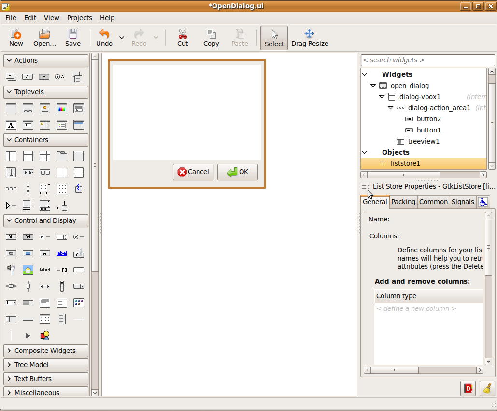Both columns will be strings. For Glade, this translates to a "gchararry". Click where it says "define new column", and choose gchararray from the list. Then hit enter. This will create a default title for the column. Call this column "title".
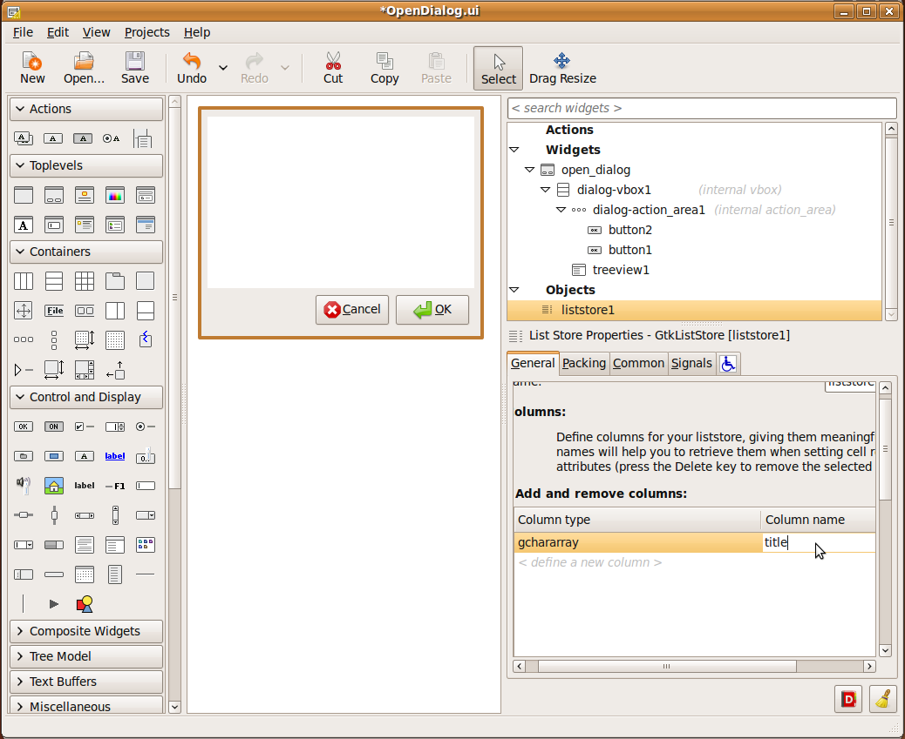Repeat this process to create the "text" column.
There is no data in liststore1 yet. We'll add it from couchdb in code after we are done setting up the TreeView in glade.
Create a Column in the TreeView
We've created two columns in liststore1. But these columns are just in the model. They store data, they don't display it. The TreeView needs a column for displaying the title of each document so that the user can pick one. To get started, select treeview1 in the inspector, then click "Edit" in the toolbar above. This will bring up the Tree View Editor window.
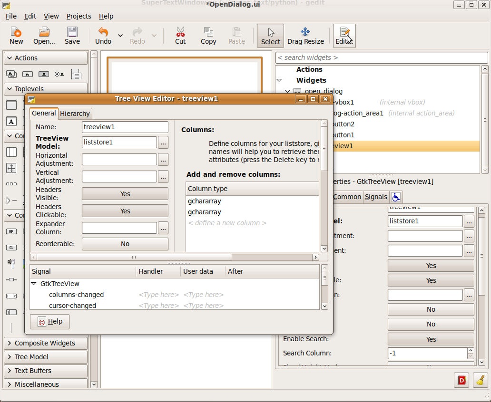Click the hierarchy tab, where you can edit children of the treeview.
 Click the "Add" button. This will add a Column to the Treeview. In the right hand side, scroll down if needed to set the title to "Title".
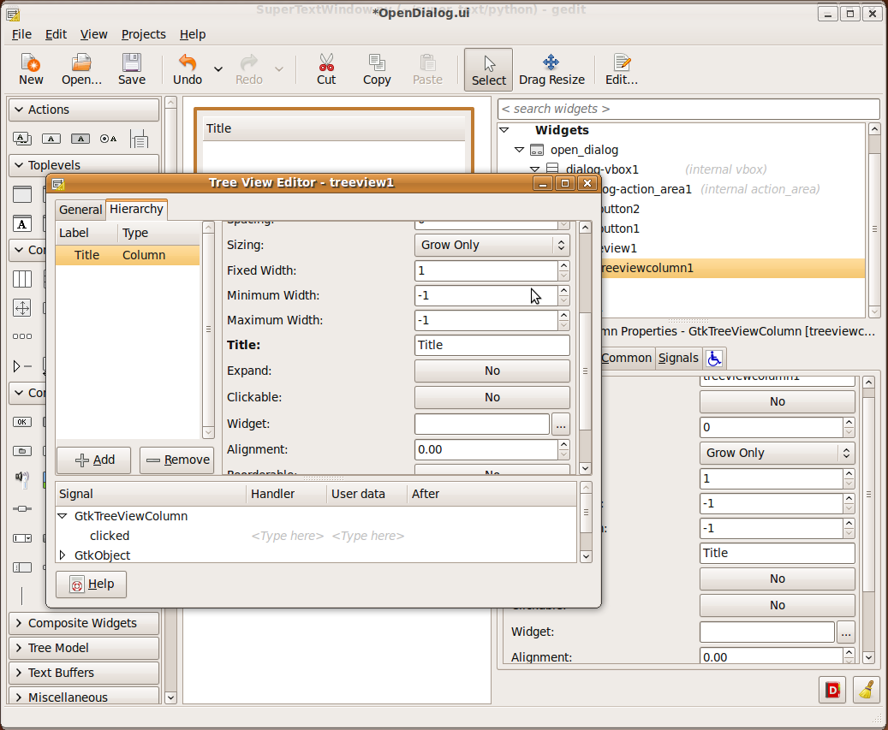
Click the "Add" button. This will add a Column to the Treeview. In the right hand side, scroll down if needed to set the title to "Title".
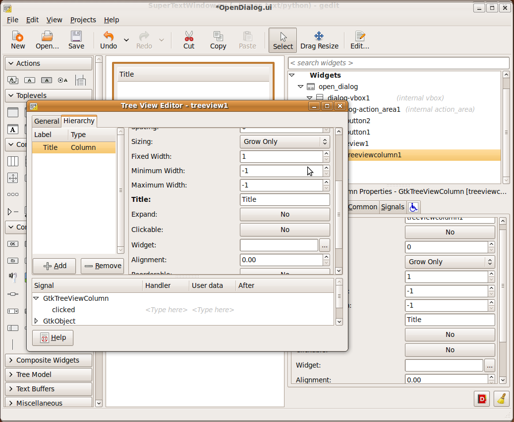
Create a CellRender in the Column
Now the treeview has a column, but the column doesn't know what to display or how. We need to give it a cell rendered to display the text from the 0th column of liststore1. Right click on column, and choose "Add Child Text Item".
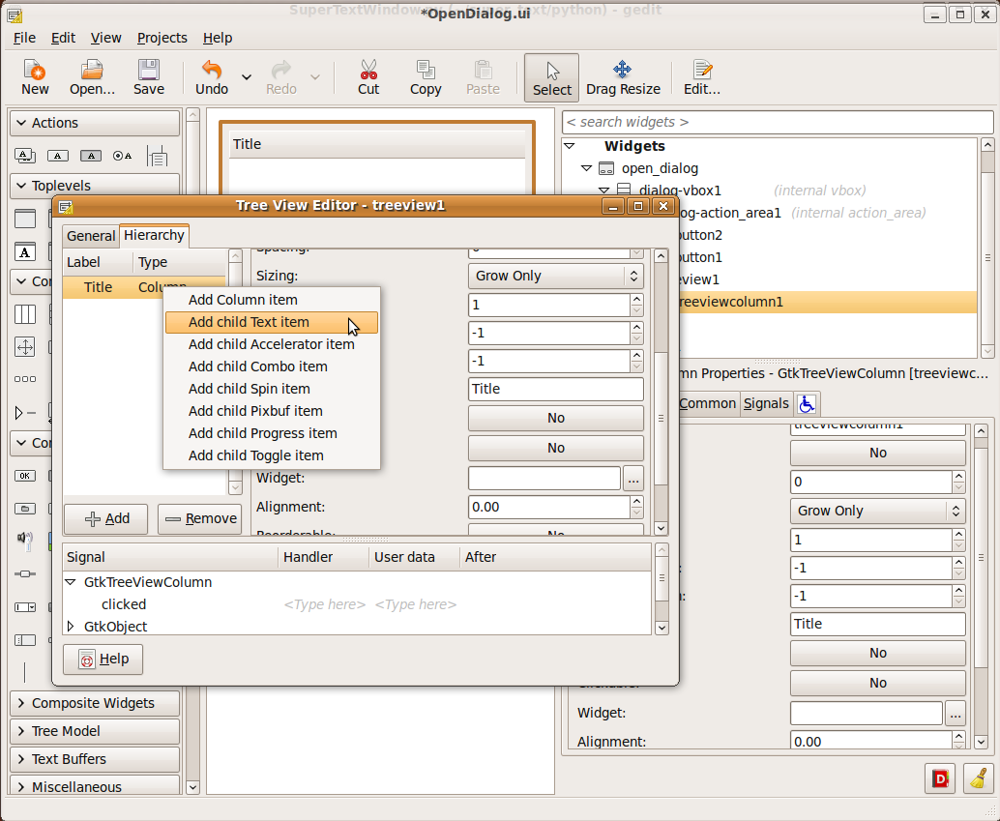To tell the cell rendered to display the titles stored in liststore1, look at the Text property, and notice that it is unset. Click on the dropdown that says "unset", and choose the column called "title". This tells the cellrender to tell the column that it is in to display the titles in liststore1.
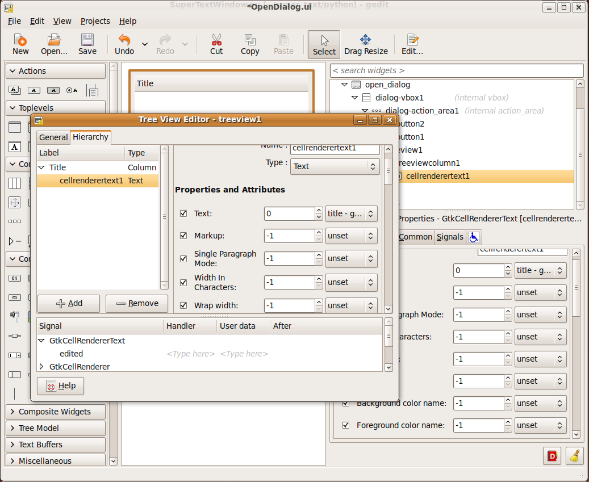Close the editor and save, becuase now it's time to write some code.
Populating the TreeView with Titles
Now that the UI is ready, we need to write some code to make it work. Populating the TreeView with the titles requires the following steps:
- Create a function that loads titles
- Getting a list of titles and text from couchdb
- Getting a reference to the ListStore that holds the data for the TreeView
- Adding each title and document set to the list store
Create the load_titles function
The function is going to be called by SuperTextWindow, which will pass in a reference to a couchdb database to use. So the function signature should be like this:
Get a list of titles and text
Next we ask couchdb for all of the titles and text that it has in the database. We tweak the javascript filter function to return title and text for each row before getting the results:
Get a reference to the ListStore and add the titles and text to it
Once we have the results, we can iterate through them and add them to liststore1. Our filter function asked for the title to be returned in the 0th position of the value array, and the text in the 1th position.
The whole load_title function looks like this:
Create the get_selection function
The dialog still needs a bit more code to work. It needs to return the user's selectin, if there is one. To do this, we need to ask the TreeView what is selected. This involes:
- Getting a reference to the selected rows in the TreeView, including a reference to a model that represents the data in the selected row
- Return nothing if nothing was selected
- Get a reference to the first (and only) selected row
- Use that reference to pull the text and title out of the selected row, and return them.
This sounds more complicated than it probably is. So here's the code:
Calling the Open Dialog
Now we want to use the Open Dialog in the SuperTextWindow open_file function. To call the OpenDialog, we need to follow these steps:
- Import OpenDialog in SuperTextWindow
- In the open_file function, create an instance of OpenDialog
- Tell the dialog to get the list of titles
- Run the Dialog
- Get the titel and text
- Destroy the dialog
- Check the response before proceeding
Import OpenDialog
Just like the SaveDialog, add the import line to the list of imports:
Create an instance of the dialog and run it
So now we're ready to call the dialog from the SuperTextWindow's open_file function. Creating the OpenDialog is exactly the same as creating the SaveDialog, except we also want to tell it to load the titles before we run it:
Retrieve the Title and Text
Now use the get_selection function to retrieve the title and text from the dialog. Don't forget to check the response type before going on.
Update the UI
Now just put the text into the texview:
That's all there is to it. So the whole open_file function looks like this:
Finsihing the Application
Now opening a saved document is much more intuitive.

However, the application is not complete. There are a few things left for you to do:
- Set the title of the SuperTextWindow to display the note title. Try self.set_text(title).
- The Save command works more like "Save As". The application probably shouldn't pop up a SaveDialog every time you want to save. If it's already been saved, you probably just want to save it, but use a SaveDialog when the user choose Save As, or is saving a document for the first time.
- The OpenDialog should probably return when the user double clicks on an item in the list. Try connecting to the "select-cursor-row" signal on the TreeView, and calling self.response(gtk.RESPONSE_OK) in the handler.
- Perhaps the Ok button in the OpenDialog should be disabled if nothing is selected. Try setting the "sensitivity" in Glade, and the set_sensitive function for the Ok button.
- It would be more consistent for the Open and Close dialogs to have "Open" and "Close" for buttons instead of "Ok". You can set a different type in the properties window in Glade.